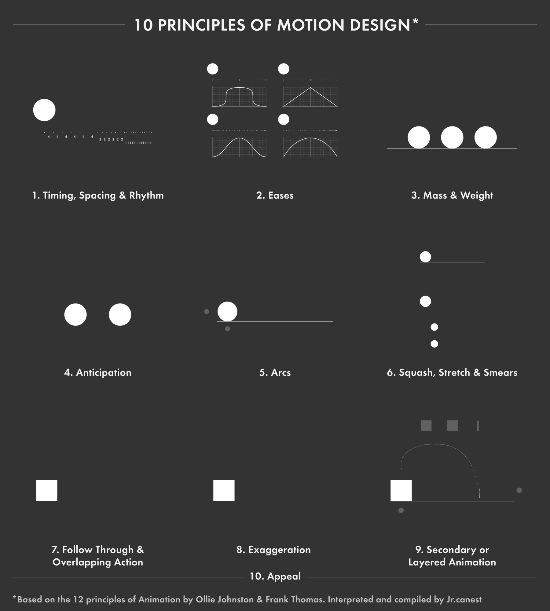
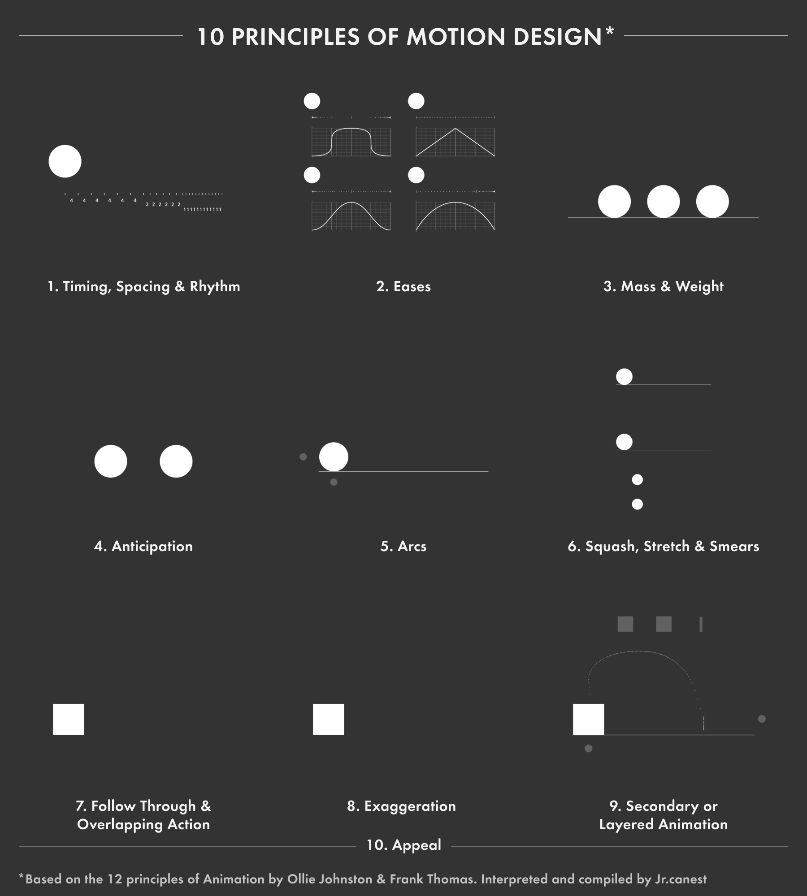

Intoduction // Justification
The aim of this project was to explore how using animated transitions between states of a website interface would affect user experience. This relationship was expected to be moderated by how much cognitive load or mental effort the animation caused for the user. The idea was that animation might be helpful, but if it’s too complex or elaborate, it might increase the amount of mental effort needed to use the website, harming the user experience. Measuring the effects of animation this way also allowed for an examination of the relationship between cognitive load and user experience.
Project Description
User Experience (UX) is a field that is growing and gaining popularity as more and more digital products are released. UX teams will often test a specific component of a user interface (UI) with users to examine how changing it affects their perceived quality of UX. Cognitive Load Theory suggests that if a user’s cognitive resources are exceeded by an interface then understanding and learning will be impeded. This would suggest that keeping user’s cognitive load to minimum is important to UX. As web technologies improve, more animation is being used in UI design, but there is not a lot of research into how it affects UX. A simple image-gallery UI was developed with HTML, CSS and JavaScript for this project that allowed for maximum customisation in testing. Users clicked on the images to open them in an expanded view and this transition was animated in different ways. Users clicked on all of the images with buildings in them, similar to a CAPTCHA task, then completed two questionnaires measuring cognitive load experienced in the task and their perceived quality of UX.
Project Findings
This project did not find any statistically significant differences between animated and non-animated interfaces on their quality of UX or any significant interaction between animated transition and cognitive load on UX. This was likely due to a relatively small sample size of 77 participants and an issue with the complexity of the task the users had to do. This study is the first to look at cognitive load in the context of such a specific UI context. Including cognitive load in the context of UX could be valuable and provide insight into the relationship between a user’s working memory and perceived quality of user experience.
Download Full Report
You can download the a pdf of the full research project here

 
